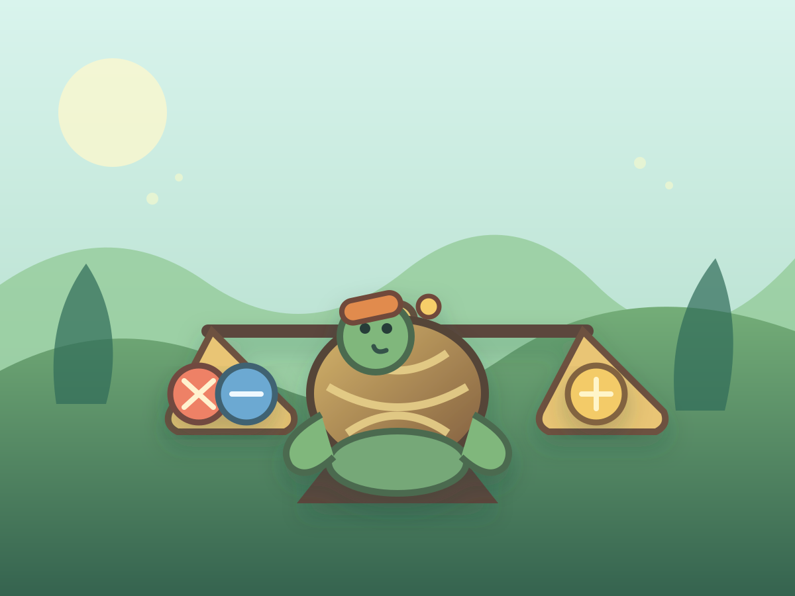

Each grove shows the total the right pan needs.
Settings

Moss Shell Taro's gentle puzzle
Balance Grove
Place the right stones on the grove scale and help Taro steady the bridge.
Balance named stones to steady three peaceful forest bridges.
Progress: 3 groves · 3 bridges · no timer
Best checks: Not yet
How to play
Tap stones to place them, then check the balance. Names and shapes help you plan.
A wrong mix clears gently. There is no timer or score pressure.